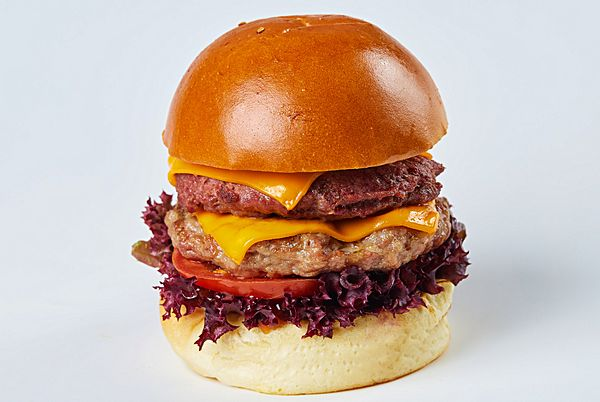
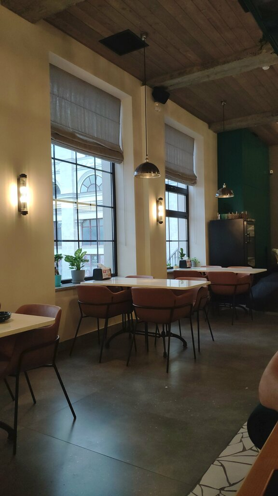

290 г
Бургер Рокстар
Куриная котлета, жареный бекон, луковые кольца, чеддер и моцарелла.
510 ₽
Две котлеты — из говядины и свинины. С чеддером и карамелизированным луком.
Куриная котлета, жареный бекон, луковые кольца, чеддер и моцарелла.
510 ₽Пряный куриный бульон с кокосовым молоком, рисовой лапшой и креветками.
600 ₽Хрустящие баклажаны с томатами, крем-сыром, кинзой и грецким орехом.
420 ₽Спагетти с беконом, чеддером и пармезаном в сливочном соусе.
485 ₽Две котлеты — из говядины и свинины. С чеддером и карамелизированным луком.
790 ₽Креветка с соусом тартар.
650 ₽Говядина, чеддер, маринованный огурец и соус «Техас».
685 ₽Две котлеты — из говядины и свинины. С чеддером и карамелизированным луком.
790 ₽Куриная котлета, жареный бекон, луковые кольца, чеддер и моцарелла.
510 ₽Свинина, халапеньо, чеддер и медово-горчичный соус.
570 ₽Свинина с беконом и моцареллой. Соусы песто и чимичурри.
610 ₽Куриная котлета с тигровыми креветками, сливочным сыром и терияки.
680 ₽Котлеты из говядины и курицы, хрустящий бекон, чеддер и халапеньо.
900 ₽Говядина с беконом, пармезановым соусом, дорблю и крем-сыром.
670 ₽Куриная и говяжья котлеты, чеддер, маринованный лук и горчица.
670 ₽Свиная котлета, халапеньо, чеддер и острый соус Carolina Reaper.
670 ₽Куриное филе с картофелем, стручковой фасолью, брокколи и черри.
600 ₽Рёбра на открытом огне, в маринаде из тёмного пива с мёдом и апельсином.
390 ₽Медальоны из спинной части.
980 ₽Антрекот из крымской говядины сухого вызревания.
800 ₽Свинина в прованских травах с оливковым маслом.
400 ₽Говядина с молодым картофелем, салатом и пармезаном.
1100 ₽Бульон на бычьих хвостах, яичная лапша, яйцо, чили и кинза.
550 ₽На мраморной говядине. С пампушкой, чесночным салом и сметаной.
460 ₽Пряный куриный бульон с кокосовым молоком, рисовой лапшой и креветками.
600 ₽Куриный бульон, домашняя лапша и яйцо.
370 ₽Говядина из угольной печи, картофель, шампиньоны и ореховый соус гамадари.
720 ₽Хрустящие баклажаны с томатами, крем-сыром, кинзой и грецким орехом.
420 ₽Куриное филе в беконе, пармезан, яйцо и гренки.
470 ₽Мидии и кальмар в устричном соусе, томаты и свежий огурец.
770 ₽Фета, маслины, овощи и ялтинский лук с оливковым маслом.
450 ₽Томаты, огурец, сладкий перец и два вида лука с оливковым маслом.
295 ₽Томлёная груша, халуми и ромэн с вишнёвым соусом.
470 ₽Хрустящие грибы с чесночным соусом.
380 ₽Кольца кальмара с тартаром.
390 ₽Куриные стрипсы с сырным соусом.
440 ₽Креветка с соусом тартар.
650 ₽Картофель фри с кетчупом.
280 ₽С коктейльным или ягодным соусом.
450 ₽Гренки, сырные палочки, куриные стрипсы, фри и луковые кольца.
770 ₽Соус на выбор. С морковью, сельдереем и блю чиз.
490 ₽Батат с тёртым пармезаном.
420 ₽Спагетти с беконом, чеддером и пармезаном в сливочном соусе.
485 ₽Спагетти, сливочный песто, томаты и пармезан.
510 ₽Спагетти с креветками, пикантным соусом, петрушкой и пармезаном.
550 ₽
улица Маяковского, 5, Севастополь. Столик можно забронировать по телефону или в WhatsApp.
Посмотреть зал ↗